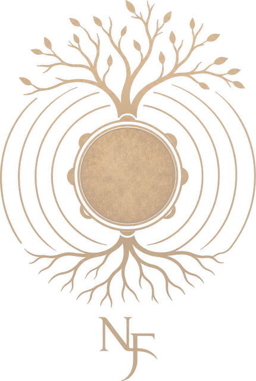
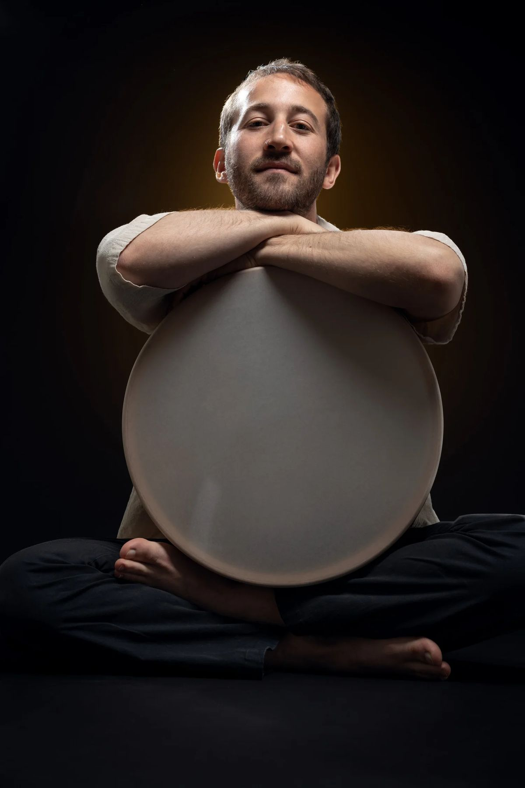
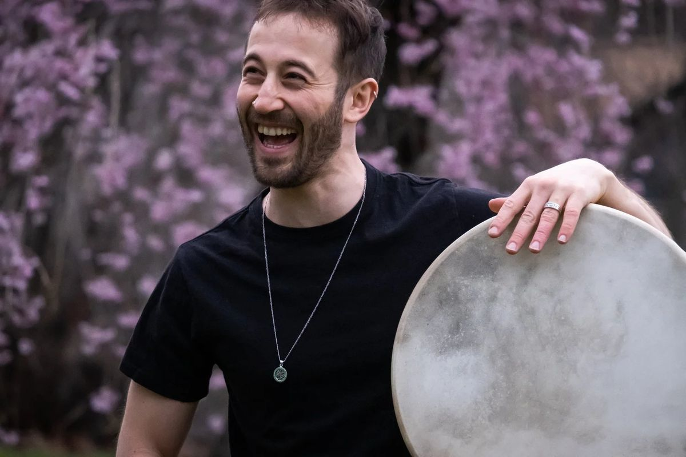
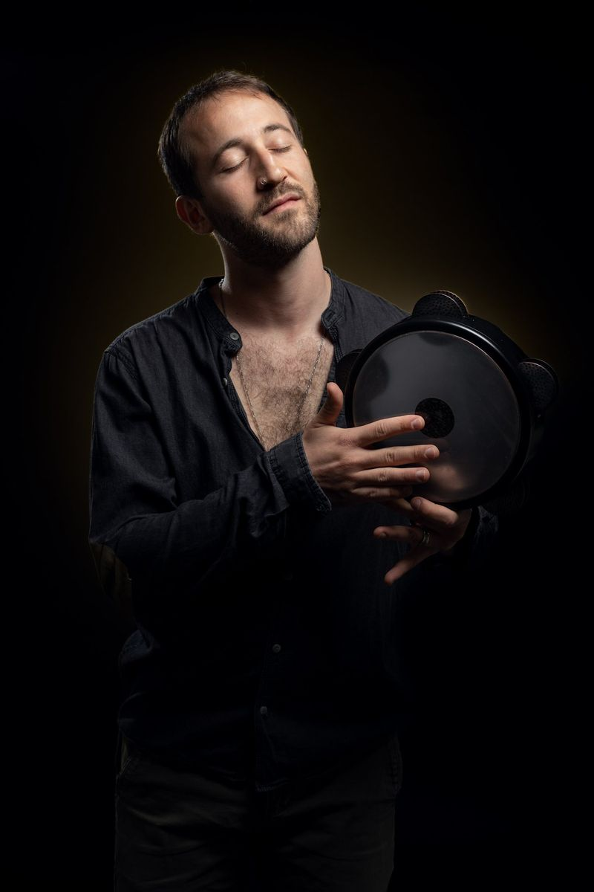
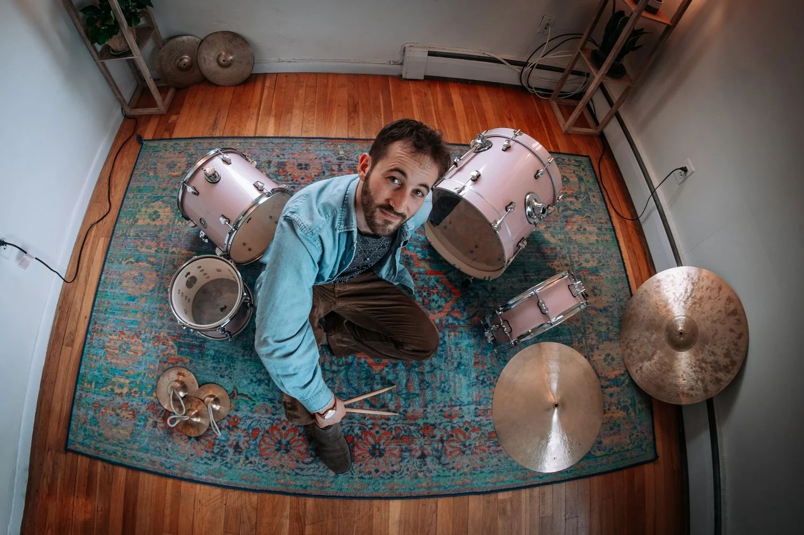

Songs for Empathy
Original music for a quintet, built on layered rhythms and warm melodies.

Traditions in Rhythm
Percussionist, drummer, composer and educator. Frame drums, darbuka and drum set, from Jerusalem to Boston and back.

Original music for a quintet, built on layered rhythms and warm melodies.

Clarinet, guitar and percussion. Instrumental miniatures from Jerusalem.

A Balkan and Gypsy party band. The chairs are optional.

Israeli-Persian music led by tar player and composer Itai Armon.

HaHolmim Achrei HaShemesh. Hebrew songs, live and in the studio.

Soul of the Drum. Three percussionists at the centre of the stage.

Nadav's debut album, released August 2023. Music about empathy, compassion, fear and optimism, drawing on jazz, Latin, classical and Middle Eastern traditions.
Nadav Friedman grew up near Tel Aviv, found his musical roots in Jerusalem and sharpened them in Boston. He studied jazz at the Jerusalem Academy of Music and Dance and the New England Conservatory, and learned from traditional masters of Middle Eastern, North and West African, Latin American and Indian percussion.
He has performed with artists including Danilo Pérez, Dave Holland, Donny McCaslin, Ethan Iverson and Jason Moran, and today plays across Israel with his own projects and with some of the country's most adventurous bands.

Private lessons in drum set and Middle Eastern percussion, online or in person, built on his method The Middle Eastern Drum Set. Beginners welcome.
Join Nadav's WhatsApp updates group for new shows, releases and workshop openings. It's announcements only, a few messages a month.
join the group